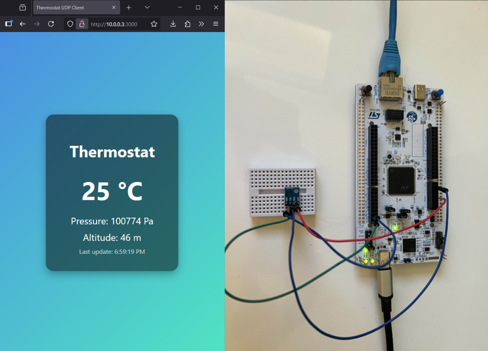
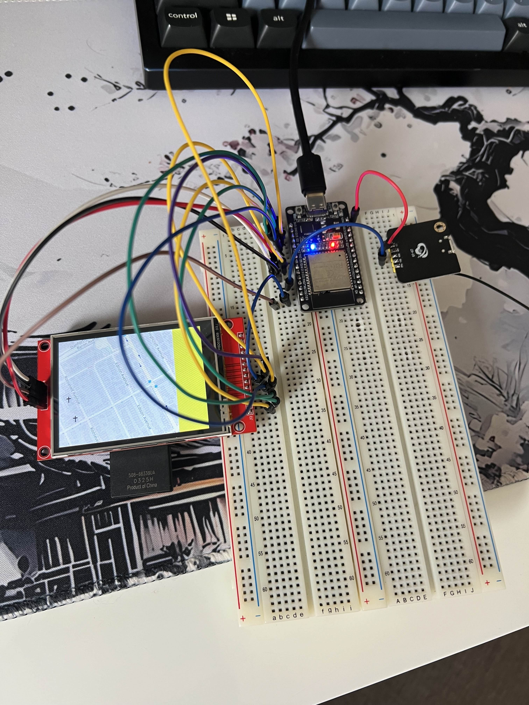
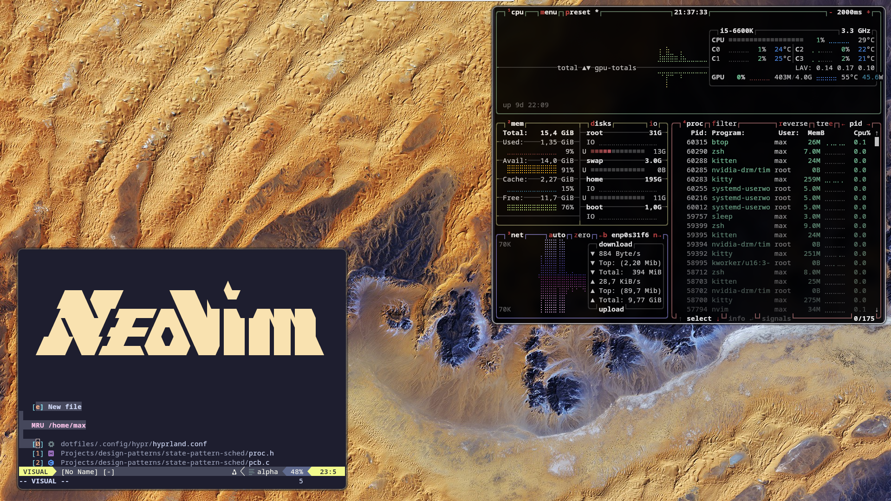

Passionate about embedded systems, IoT development, and systems engineering. Currently pursuing Computer Science at Carleton University with a focus in software engineering.
I'm a Computer Science student at Carleton University with a passion for embedded systems, IoT technology, and systems security. My experience ranges from microcontroller programming to large-scale network automation and deployment systems.
Currently working as a Software Developer at General Dynamics and conducting embedded security research at Carleton University, I specialize in embedded software development, hardware security, and systems engineering. My academic background combined with hands-on industry experience has provided me with both theoretical knowledge and practical skills in embedded development and security.
Carleton University • Expected Graduation: May 2027
GPA: 3.9 / 4.0 • Ottawa, ON
Relevant Courses: Discrete Mathematics and Algorithms II (A+), Database Management Systems (A+), Introduction to Systems Programming (A), Applied Cryptography and Authentication (A+), Operating Systems (A+)
GPA
Years Experience

IoT thermostat using STM32H5 with BMP180 sensor for temperature, pressure, and altitude monitoring. Implemented UDP server using LwIP stack to transmit sensor data to HTTP server on home lab, accessible globally through Tailscale VPN network.

Handheld GPS navigation device using an ESP32 to display maps in real time based on user location. Maps loaded from SD card to TFT LCD over SPI, integrated a magnetometer via I2C for compass heading (direntionality).

Arch Linux home lab linked to the internet via a VNC server and Tailscale VPN. The server helps maintain a consistent development environment across different machines, as well as run network applications from a centralized computer (dotfiles on GitHub).
I'm always interested in new opportunities and collaborations. Feel free to reach out!